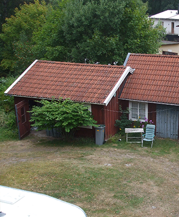

Siri-Huset
Een Zweeds huis in Linneryd, gemeente Tingsryd, aan de rand van het dorp gelegen. Het huis is van 1932 en heeft nog originele en sfeervolle details. Het is geschikt voor 4 tot 5 volwassenen.
Er is een babybedje met bijbehorend dekbedje en lakens, badje en aankleedkussen. Ook een kinderstoel is aanwezig.
Binnen een halve minuut ben je bij de supermarkt. Afstand naar het meer is 5 minuten lopen. Grote stad Växjö is 35 km, vliegveld 40 km. Glasblazerijen Kosta 35 km. Restaurant Korrö 6 km.
woonkamer heeft een tegelkachel en 6 zitplaatsen. Één zitbank is slaapbank. Eettafel met 4 comfortabele stoelen (er staan 2 extra stoelen op de slaapkamer).
Keuken is in 2010 vervangen en van alle gemakken voorzien, waaronder: inductiekookplaat, vaatwasser, koelkast, combi-magnetron, koffiezetter en waterkoker. In de keuken staat een kleine tafel met 2 stoelen. Voorraadkast met kelder. Let op: neem zelf handdoeken en theedoeken mee.
Badkamer op de begane grond, deze is sober. Het heeft een douche, toilet en wastafel. Warm water d.m.v. een boiler.
Hal met Miele wasmachine en extra koelkast met vriesgedeelte. Ook zijn hier een stofzuiger, een haarföhn en een strijkplank met strijkijzer aanwezig.
Boven zijn 2 slaapkamers, de grootste heeft een twee persoons Auping bed met 2 matrassen van 90x200 cm en de kleinste slaapkamer met 2 persoonsbed 140x200 cm. Let op: zelf dekbedhoezen en onderlakens meenemen.
Achter het huis staan schuren, hier staat het buitenmeubilair, een BBQ en 2 kano`s.
Een overzicht
- Woonkamer
- Tegelkachel
- 6 Zitplaatsen
- 3 banken (waarvan 1 slaapbank)
- Eettafel met 4 comfortabele stoelen
- Keuken
- Inductiekookplaat
- Vaatwasser
- Koelkast
- Combi-magnetron
- Koffiezetter
- Waterkoker
- Voorraadkast met kelder
- Kleine tafel met 2 stoelen
- Badkamer
- Douche
- Toilet
- Wastafel
- Boiler
- Hal
- Miele wasmachine
- Extra koelkast met vriesgedeelte
- Stofzuiger
- Haarföhn
- Strijkplank met strijkijzer
- Boven, 2 slaapkamers met bijbehorende dekbedden en kussens
- 2 persoons Auping bed (2 matrassen van 90x200)
- 2 persoons Bed (140x200)
- 4 dekbedden (140x200)
- 2 dekbedden (140x220)
- Schuren
- Buitenmeubilair
- BBQ
- 2 Kano's